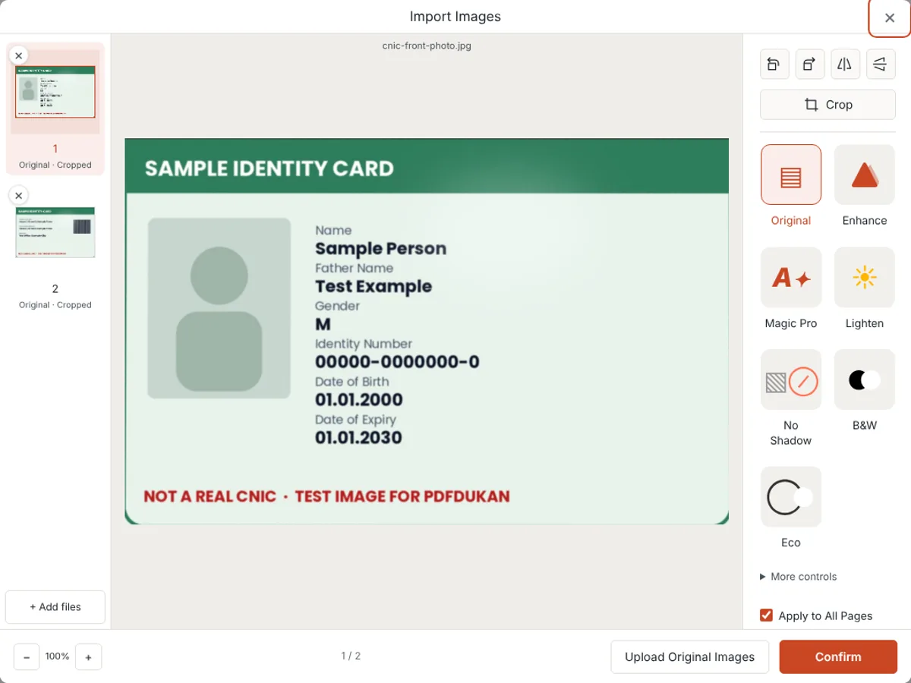
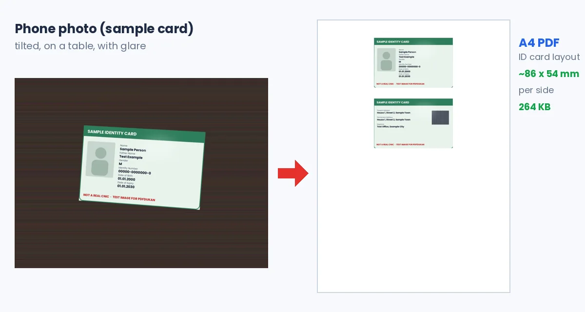

Scan CNIC & Documents to PDF Safely (Tested, Free)
To scan CNIC & documents to PDF safely, use a scanner that processes photos in your browser, so the card never reaches a server. Photograph both sides in color without flash, check the auto-crop, and save one PDF. Upload it only to the official portal that asked for it.
Open the free PDFdukan document scanner. No app and no account needed.
How do you scan CNIC & documents to PDF safely?
A safe CNIC scan takes five steps in the PDFdukan scanner, and none of them sends the photo anywhere.
- Place the card on a plain dark surface and photograph the front, then the back.
- Import both photos, or use Smart Scan to capture them with the camera.
- Check that each side is cropped to the card edges and straightened.
- Pick the Original filter so the card keeps its true colors.
- Choose a layout, then download the PDF.

We tested this with a sample card photographed at an angle on a wooden table. The scanner found the card edges, straightened both sides and built the PDF in the browser.
Is it safe to scan your CNIC online?
Scanning a CNIC online is safe only when you know where the image goes. Some tools process files on their servers, while browser-based tools keep the image on your phone.
Server tools make deletion promises instead. PDF Monster says it processes scans on servers in Germany and deletes them within one hour. PDFsimpli says files are encrypted and deleted right after processing.
A browser tool removes the need to trust that promise. During our full scan and export of both card sides, the browser sent zero upload requests. The photos stayed on the device from import to download.
Safety also covers where the PDF goes next. Share a CNIC only with an official form or a person you know needs it, and delete extra copies from chat apps.
Should the front and back go on one page?
The front and back of a CNIC belong on one page when the form or office asks for a single-page copy. Otherwise, two pages in one PDF are fine and easier to read.
The PDFdukan scanner now has an ID card layout for this. It places both sides on one page, stacked near the top like a photocopy. A card-shaped scan prints at the standard ID-1 card size.
ID-1 measures 85.60 × 53.98 mm under ISO/IEC 7810, and many countries use it for identity cards and driving licences. In our test, both sides printed at about 86 × 54 mm on A4.

Which settings keep an ID card scan readable?
Color settings keep an ID card readable and accepted. ScanPDFs warns that ID cards are usually rejected in black and white.
Our test showed why the filter matters. The default Magic Pro filter washed the card's tinted background to near white. The Original filter kept the card's real colors.
Glare is the other common problem on laminated cards. ScanPDFs suggests tilting the card or moving away from overhead light instead of using flash. Keep a small margin around the card so no edge is cut off.
How do you scan certificates and other documents?
Certificates and multi-page documents scan the same way, one photo per page, saved as one PDF. Add pages in reading order and check each crop before export.
Portals often cap upload size. Our one-per-page test PDF of both card sides was 318 KB. For a larger set, use PDF compression after scanning. Our guide to scanning documents on your phone covers lighting and angles.
Frequently Asked Questions
How do I scan CNIC & documents to PDF safely on my phone?
Use a browser-based scanner, photograph each side in color, and download one PDF. Nothing needs to be installed. Send the file only to the official portal that requested it.
Is my CNIC uploaded when I use the PDFdukan scanner?
No, the PDFdukan scanner processes photos in your browser. In our test, no upload request was sent during scanning and export. Optional cloud saving sends the finished file only if you choose it.
Can I put both sides of my CNIC on one page?
Yes, choose "ID card: front & back on one page" under Layout before downloading. Both sides are placed on one page. Card-shaped scans print at standard card size.
Should I scan my ID card in color or black and white?
Scan an ID card in color. Many forms reject black-and-white ID copies. Use the Original filter to keep the card's true colors.
Does this work for a driving licence or passport page?
Yes, the same steps work for a driving licence, passport page or certificate. Licences are often ID-1 size, so the one-page layout prints them at real size. A passport page is fitted to the page instead.
Can I use photos of my CNIC that I already took?
Yes, photos already on your phone can be imported instead of captured. The scanner crops and straightens them the same way. Clear, flat photos without glare give the best result.
What if the portal says my PDF is too large?
Choose Medium quality under PDF options, or compress the finished file. In our test, both card sides stayed under 1 MB: 318 KB as two pages and 264 KB on one page.